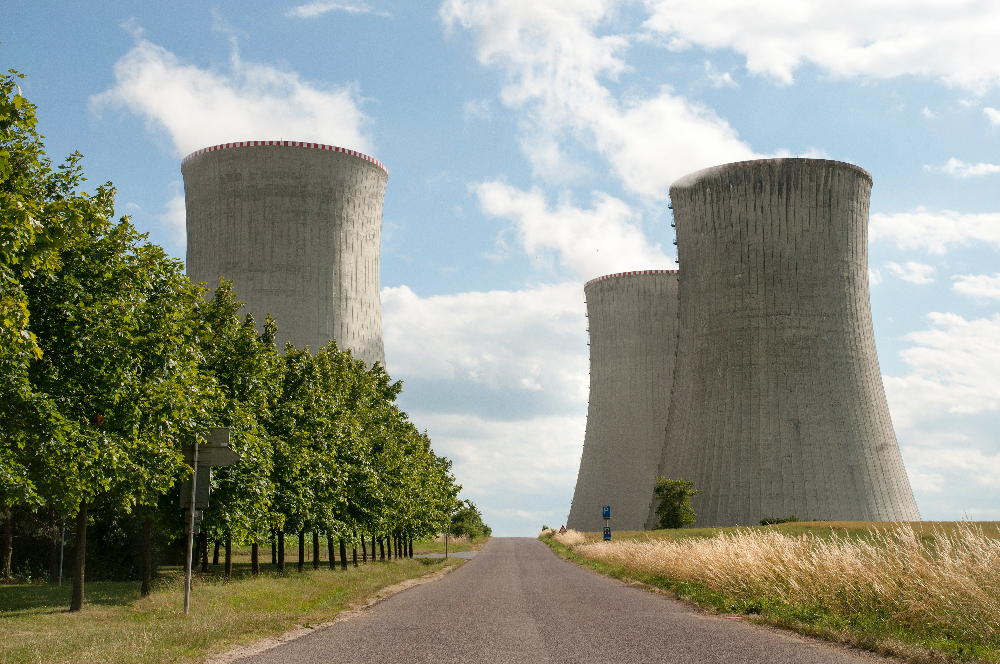

The Quest For Energy in a Changing USA
Energy makes America go. But the way we get it is more complex and vulnerable than most of us realize. The truth about energy is that change won't come easily. Here, you can explore America’s energy stories, meet the people behind the debate and join the conversation about our future.

Coal
The residents of Meigs County, Ohio, live beneath the towering smokestacks of four coal-fired power plants. A fifth plant has been proposed, the latest salvo in a battle over the way the U.S. gets electricity.
Read More
Wind
Once considered a burden, the wind is now reviving the Texas town of Roscoe by creating new jobs and bringing people back, giving a second chance to this once-dying community.
Read More
Electric
The U.S. energy grid is in trouble. The crumbling infrastructure and lag in construction of power lines have set the stage for more serious and frequent blackouts in the coming years.
Read More